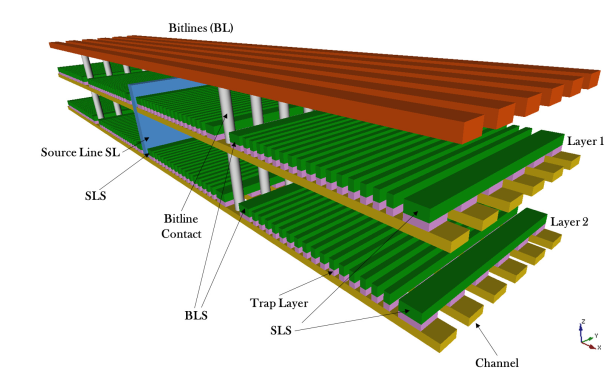
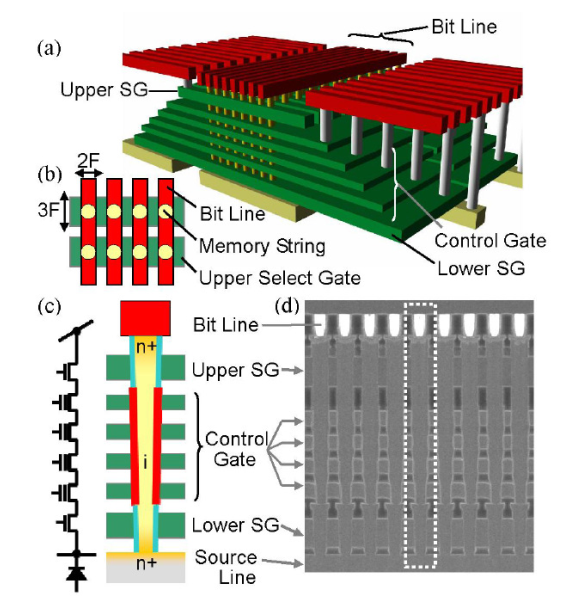
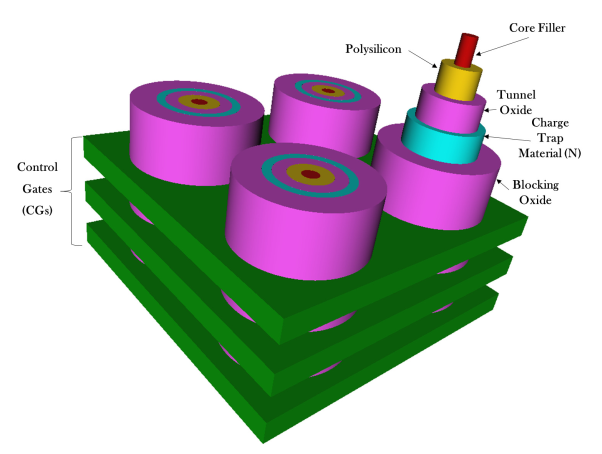
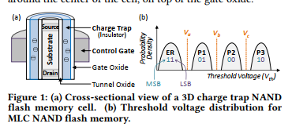

Different issues are faced upon by the feature size shrinking of flash memory.
Intrinsic phenomena like random doping fluctuations, random telegraphic noise and the electron injection statistics significantly reduce the margin between the threshold voltage distributions.
Multi bits per cell has made things worse reducing reliability and lifetime.
3D NAND flash has provided with a way to overcome all the limitations of planar flash memory.
Most of the 3D NAND rely on charge trap flash architecture while some rely on FG architecture.
In this paper, they discuss about the charge trap flash memory and 3D NAND architectures based on the CT process.
Following are two of the topological classification of different integration solutions:
Control Gate and Channel along the horizontal direction: This includes 3D Stacked option which is the preliminary attempt to achieve 3D integration starting from planar technology.
Control Gate along the horizontal direction and channel along the vertical direction: This includes the architectures like BiCS, P-BiCS, and the V-NAND architecture from Samsung including VRAT, VSAT and TCAT.
3D Stacked Architecture:
first idea and straightforward idea that stacking multiple planar layers of memory arrays would yield 3D layer.

As shown in image above.
Here, drain and bitline contacts are shared between NAND strings belonging to different layers, while source/wordlines contacts and source/drain selectors are associated to separate layers.
Cost and process technologies considerations of this architecture can be derived from those of the planar products
the major hurdle is represented by the thermal budget of the manufacturing process to grow and populate additional layers
here each layer is manufactured separately and this the architecture is flexible.
Since the layers are fabricated independently, there is a significant difference in the threshold voltage distribution with ISPP programming.
BiCS Architecture:
Control Gates are the different rectangles stacked on top of each other.

The bottom rectangle plate is the ensemble of Source Line Selectors terminating flash string.
Multiple holes are drilled through the stacks and filled with poly-silicon in order to form a series of vertically arranged NAND flash memory cells.
Bitline Selectors (BLS) and Bitlines (BL) contacts are on top of the structure
Each cell in the BiCS architecture works in depletion-mode since the poly-silicon constituting the body of the transistor is lightly n-doped with a uniform profile or even left un-doped. This reduces the manufacturing complexity of the p-n junction along the vertical direction of the plugs (also called pillars)
The CG plate intersection with a pillar maps a single memory cell. Each NAND Flash string of cells is connected to a BL contact via BLS, whereas the bottom of the string is connected to a common source diffusion formed directly on the process substrate made of silicon.

P-BiCS
BiCS evidenced some critical issues such as poor reliability characteristics of the memory cells interms of endurance and data retention, poor SLS performances (i.e., cut-off) and a high resistance of the SL, which limits the sensing performance
To solve these issues, a pipe-shaped BiCS architecture has been developed, namely the P-BiCS. This integration approach adopts a U-shaped vertical AND string
Damages in 3D NAND can be partially recovered by a process called "self-recovery"
Self recovery has been studied for 2D NAND before to improve lifetime. Proposal also included to increase temperature to accelerate self recovery
Heatwatch proposed to improve 3D NAND relability. Key idea is to optimize the read reference voltage (adapting it to the dwell time of workload and the current operating temperature).
Heatwatch:
efficiently tracks flash memory temperature and dwell time online
sends this information to our reliability model to predict the current voltages of flash cells
predict the current voltages based on the current cell voltages
Improves lifetime by 3.85X over the baseline that uses fixed reference voltage
Limited lifetime of NAND is because of wearout in flash cells by repeated programming and erase operations. After each PE cycle, the threshold voltage is affected because of the inadvertant trap of electrons in flash cell.
Some of these trapped electrons gradually escape during the idle time between the consecutive PE cycle. This time is called "dwell time"
This escape or detrapping is called self-recovery.
This can be accelerated by high temperature to the flash cell during the dwell time in 2D FG transistors.
But 3D NAND uses CT flash
Two effects shown in flash memory is studied in this paper:
Retention Loss: Leakage of charge carriers from the flash cell that contains valid data, that can induce errors
Program Variation: Random variation that can cause cell to be set to an incorrect voltage while programming
Some of the findings made are as follows:
increase in dwell time from 1 to 137 min slows retention loss by 40%
lowering temp from 70 to 0 C slows retention loss by 58%
increasing temperature from 0 to 70 C during programming increases program variation by 21%
effectiveness of self-recovery is correlated with dwell time experienced during the most recent 20 PE cycles

Errors in 3D NAND is dominated by retention errors. Thus, reducing retention errors by performing recovery cycles can increase lifetime. Recovery cycle means PE operation where program operatin is followed by an extended dwell time.
High temp increases electrom mobility. Thus short retention time in high temperature has same retention loss as long retention time at room temp.
And short dwell time at high temp as same self recovery effect as long dwell time at room temp.
They refer to other papers [8,12,24] for technique to find the threshld voltage values.
Read retry and the above technique is used to detect threshold voltage and fine tune it.
3D NAND uses new flash cell design that vertically stacks dozens of silicon layers in a single chip.
Due to the difference in the physical orfanization at circuit level and structural level, there are three new error sources:
Layer to layer process variation: Average error rate of each 3D stacked layer is significantly different. Raw bit error rate at the middle can be 6x that of top layer.
Early Retention Loss: A new phenomenon where the number of error due to charge leakage increases quickly within several hours (~3 hours) after programming, and then increases at a much lower rate.
Retention Interference: Rate at which charge leaks from a flash cell depends on the data value stored in the neighbouring cell. Charge leaks at a lower rate when the vertically adjacent cell is in a state that holds more charge.
Different techniques are proposed for mitigation of various process variation and early retention loss.
LaVAR or Layer Variation Aware Reading: Reduces the effect of layer to layer process variation by fine-tuning the read reference voltage separately for each layer.
LI-RAID or Layer Interleaved Redundant Array of Independent Disks: Intelligently groups pages under the RAID error recovery technique using the info about layer to layer process variation
ReMAR or Retention Model Aware Reading: Reduces the retention errors by tracking the retention time of data using the retention model (new model they propose) and adapts read reference voltage to data age
ReNAC or Retention Interference Aware Neighbour Cell Assisted Correction: Adapts the read reference voltage to the amount of retention interference a page has experienced in order to re-read the data after a read operation fails.
These four techniques can be combined together to improve the flash reliability.
Most of the studies that have been done are based on planar NAND flash memory that are based on floating gate transistor. 3D NAND are however based on charge trap transistor where the charge is stored within an insulator. Here multiple layers of silicon are stacked together (typically 24 to 96 layers).Thus 3D NAND flash can be manufactured at higher technology node as 30-50 nm as compared to highly compact 10-15 nm for planar NAND.
Following are the errors that has been widely documented in planar NAND flash memory:
Process Variation Error: Error due to fabrication process and lithography limitiations.
Retention Error: With time, charge leaks off the flash cell after being programmed. Refresh technique is required.
Write-Induced Error: Warout error.
Cell-to-Cell Interference Error: Increase in threshold voltage of a cell (and eventually RBER) when adjacent flash cell is programmed.
Read Induced Error: Application of pass through voltage during read operation causes weak programming effect. The values of flash cell may change in multiple read operations.
However 3D NAND differs from planar NAND in many ways as following:
Flash Cell Design:
Planar memory uses storage of charge in FG, but 3D uses Charge Trap transistors.
In CT flash, a cylindrical substrate is between charge trap insulator layer that is radially wrapped inside control gate.
Charge Trap layer stores the charge, but is insulator (as oppposed to FG).
Chip Organization:
BL in planar NAND connects (source and drain of) the flash cells from different pages in a block.
BL in 3D NAND, which is CT, connects one charge trap cell from each layer of the chip as cells are stacked on top of each other. All the cells in a single stack (z-axis) share the same charge trap insulator.
CG in the same layer are connected through a Word Line in Y-axis. The number of WLs in a block is proportional to the length (height) of BL.
Multiple blocks are aligned in X-axis to form a flash chip.
Manufacturing Process Technnology:
3D NAND uses much larger mnufacturing technology (30-50 nm) as compared to planar 3D NAND flash memory (10-15 nm).
They use read-retry command to fine-tune the reference voltage for each read operation. (refs 9 and 14). This changes the read reference voltage by a small step called voltage step.
Metrics are
RBER: is the rate at which errors in the data before error correction.
Change in Threshold Voltage Distribution: How it changes with different sources of errors. They use read retry method to sweep over all the reference voltages to identify the threshold voltage (using techniques as in refs 14, 64 and 81).
Layer to Layer Process Variation:
The chips used have 30-40 layers and the observations are normalized to 100 layers for anonymity of the manufacturer. It is also not known from paper how they distinguish between flash cells in differet layers.
Variation exists in all three axis. However, most prominent is in the z-axis because of difficulty in stacking multiple layers in top of each other.
Prior work has shown that no etching tech can are able to produce identical 3D NAND cells while punching through multiple stacked layers
For characterization, each pages in the blocks are programmed with some random data such that each page has faced 10K PE cycles. Then comparison of collective characteristics of flash cells in a layer is made with another layer. (Repeated in multiple chips)
The plot for number of errors in each layer of a 3D NAND flash cell (for MLC) while transitioning from ER<->P1, P1<->P2 and P2<->P3 is plotted while another plot showing error with in MSB and LSB pages are plotted.
Error for ER<->P1 is significantly large while the error for P1<->P2 is also large across layers. However error for P2<->P3 remain similar across layers. (This shows that ER threshold voltage varies significantly across layers)
MSP and LSB errors vary significantly across layers. This is termed as layer-to-layer process variation.
MSB errors are higher than LSB errors in most of the layers. This is because reading MSB requires two reference voltages while reding LSB requires single reference voltages.
The top half of the layers have low error rates than bottom half because of flash cell size varies across layers.
The observed pattern of error is consistent in another different chip as well.
Optimal Read Reference voltage vary across layers as well. The optimal reference voltages (Va and Vb) vary significanlty across layers but Vc does not change much. This is because process variation affects ER and P1 state while threshold voltage distribution of P2 and P3 states are controlled by ISPP that is similar across multiple layers.
Va and Vb are low for top half of layers than for bottom half.
Early Retention Loss:
For a larger retention analysis, they program 11 flash blocks in a chip and write a pseudo random data to each page of the block. The memory is worn out where each block is exposed to different PE cycles (each blocks from 0K to 10K, thus 11 blocks). It is left for 24 days at room temperature.
For measuring retention loss, RBER and the threshold voltage distribution is measured at 9 retention times from 7 minutes to 24 days. Only frst 72 flash pages in each bolcks are used in measurement so that other errors would not affect observation.
Observation is that retention rate changes very slowly for planar NAND than 3D NAND. ALthough 3D has very less RBER initially, after 2 hours of retention time, it quickly outgrows planar RBER. RBER increases by the order of 10^4 in 3 hours and 10^6 in 11 days.
Retention Error flattens out after time in order of 10^7 seconds.
Early retention loss is caused by two possible reasons:
Tunnel Oxide is thinner in 3D NAND for faster programming.(since it should act as insulator but since being thinner is susceptible to leakage).
Cells in the same bit line share the same charge trap layer. This causes the charge in one cell to quickly leak to another cell in the same bit line due to Electron Diffusion.
Optimal Read reference voltage also changes with retention time.
Va remains fairly constant while Vb and Vc decreases with increase in retention times.
Retention Interference
This means that the speed of retention loss of a cell depends on the threshold voltage of a vertically adjacent neighbour cell (shared charge trap layer).
If two cells have different threshold voltages, charge can leak from cell with higher threshold voltage to the cell with a lower threshold voltage.
Same observation from retention loss is used to observe retention interference.
However, only the neighbouring cells that are programmed before victim cells are used for interference correlation computation. Victim cells in ER state are also ignored because they are significantly affected by program interference even though they are programmed after neighbour cell. (These are done to remove noise due to program interference.)
For retention interference, all victim cells are grouped together based on their threshold voltage states and the states of neighboring cells. Then the shift in threshold voltage after 24-day retention time was compared.
The observation was that the change in reference voltage in terms of voltage steps shows correlation with the neighboring cell voltage.
No evidence of program error was found in 3D NAND
PE cycling error is present in 3D NAND similar to planar NAND
3D NAND face less program interference than planar NAND.
Read disturb error is very weak so much so that it does not require any error mitigation.
LaVAR: Layer Variation Aware Reading
to account for layer to layer process variation, how much should the reference voltage be offset? (instead of using a single reference voltage for entire block)
LaVAR learns the offset for each layer and records them in per chip table in SSD controller
uses this variation aware Vopt during read operation by reading appropriate voltage offset for the request from the per chip table that corrsponds to the layer of request.
since there are limited number of layers, this can be represented as a table between thet variation agnostic voltage and the optimal voltage for each layer
since the change in reference voltage follows similar pattern with PE cycles across different blocks, rigorous analysis of a single block should provide model for all blocks.
LaVAR uses read retry functionality in modern NAND flash chips to find variation aware Vopt (optimal read referece voltage).
Vc does not need to be changed while Va and Vb needs to be changed and the overhead is 2N bytes for N layers.
LiRAID: Layer Interleaved RAID
To tolerate chip to chip variation, RAID technique is used in modern SSDs. RAID in SSDs combine pages from multiple chips into a logical unit called a super group and uses one of the pages to store parity information. But they do not consider layer to layer variation
Instead of grouping pages in the same layer together in the same group, pages from different chips and different layers are grouped together so that new group has evenly distributed RBERs in LiRAID.
In a case with m chips in an SSD, each RAID group contains m pages one from each chip.
If there are n wordlines, then LiRAID groups MSB page of wordline 0 with LSB page of word line n/m, MSB page of 2*n/m and so on, MSB page of wordline (m-2)*n/m, LSB page of (m-1)*n/m. Thus combines LSB and MSB pages and combines different layers in a group.
ReMARL Retention Model Aware Reading:
Retention loss occurs after programming a page. RBER of early loss is logarithm of the retention time which means majority of threshold voltage shifts occurs shortly after the programming operation.
Idea here is to track the retention time and apply appropriate optimal read reference voltage.
Prediction of optimal Va, Vb and Vc are done. Va is not affected by retention time while Vb and Vc are modeled with retention time dependency (result obtained from above).
A sweeping read reference voltage learning is performed on one of the block to learn the optimal read reference voltage to construct the model online
SSD controller must store the PE cycle count and the program time of each block.
Data stored in vertically adjacent cell to predict the amount of retention interference on a victim cell.
A model is generated online for retention interference as a function of retention time and neighbour cells state.
A read offset is computed for each block and is applied to the read threshold voltage.
(This method did not yield significant improvement)
This paper uses read retry command in MLCs of 2Y nm technology for threshold voltage modeling
Experimental measurement based characterization of threshold voltage distribution present in some 2Y flash memory
For a flash cell with 2-bits, there are 2^2 or 4 states. This needs 2^2-1 or 3 read reference voltages, thus creating 4 regions of threshold voltage distribution.
During a read operation, the threshold voltage is a cells is iteratively compared to predefined read reference voltages until the upper and lower bound are identified to determine the n-bit stored value
In earlier flash design, read reference voltages are fixed in design time. But newer flash memories below 30 nm have a technique to address the distorted threshold voltage distribution. (Due to different reasons like PE cycling, retention loss, program disturb etc, the otherwise non-overlapping regions of voltage distributions might overlap or corss the fixed boundary. This may lead to value being misread).
Read retry allows the voltage to be dynamically adjusted to track changes in distributions.
Two new commands are required on the controller side:
Set REF: sets the reference voltaage to a new value
Get REF: checks the set value of the read reference voltage
As the reference voltage can be finely tuned, we can divide the threshold voltage to multiple bins, and the values read can be changed.
Change in the threshold voltage due to PE cycling can also be done using the same technique.
For the 3D NAND chip at our disposal, the host controller issues the SET FEATURES (EFh) or SET FEATURES by LUN (D5h) command to feature address 89h with P1 subfeature set to a read retry option, as defined in that feature address. A new NAND array READ operation can now be performed.